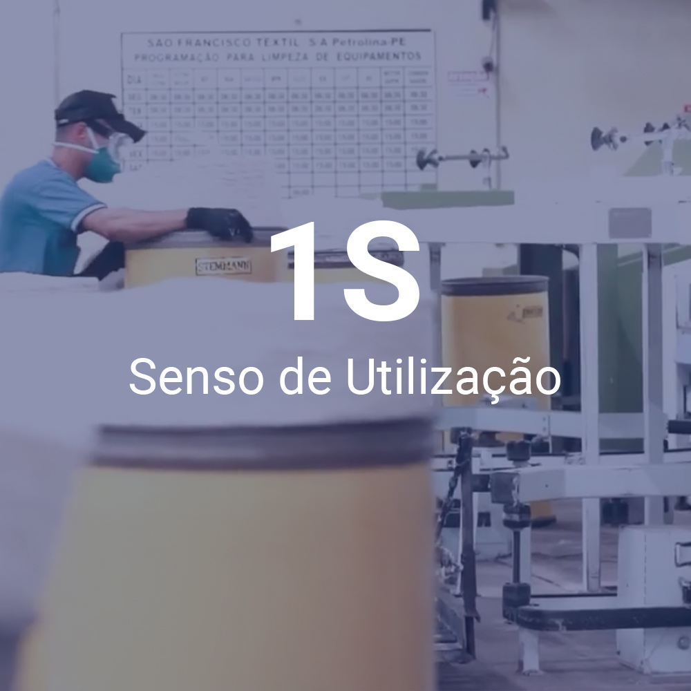

整理
Seiri
Objetivo é identificar e eliminar objetos e informações obsoletas, existentes no ambiente de trabalho.
清掃

Seiso
Um dos sensos mais importantes, conscientização da limpeza. Qualquer elemento que traz algum tipo de dano no meio-ambiente pode ser considerados como sujeira (falhas iluminação, mal cheiro, ruídos, pouca ventilação, poeira, etc)